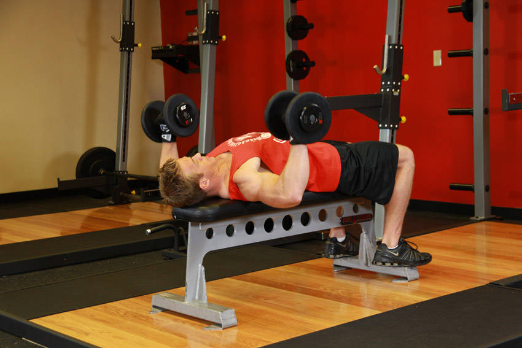
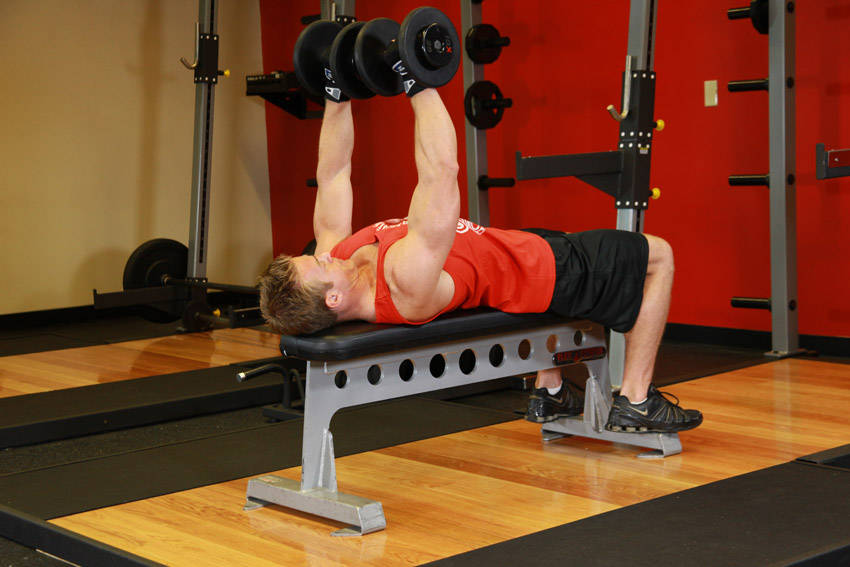
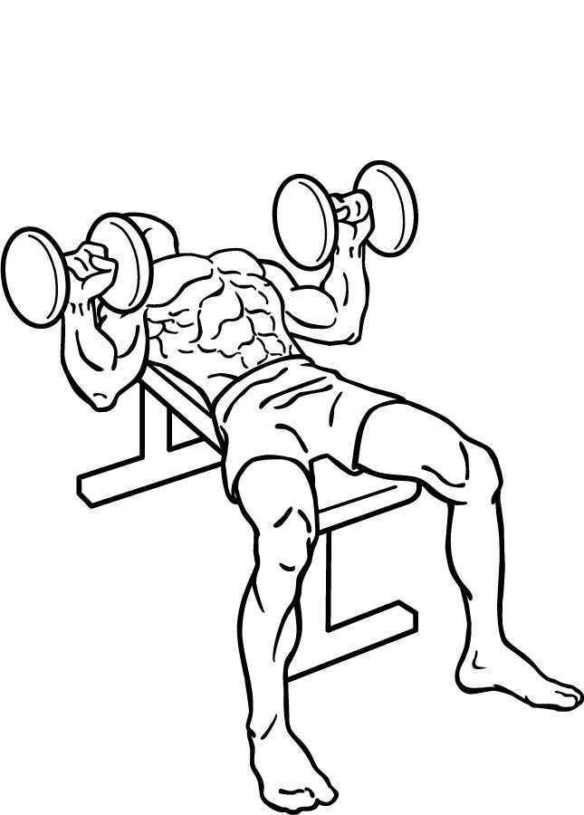
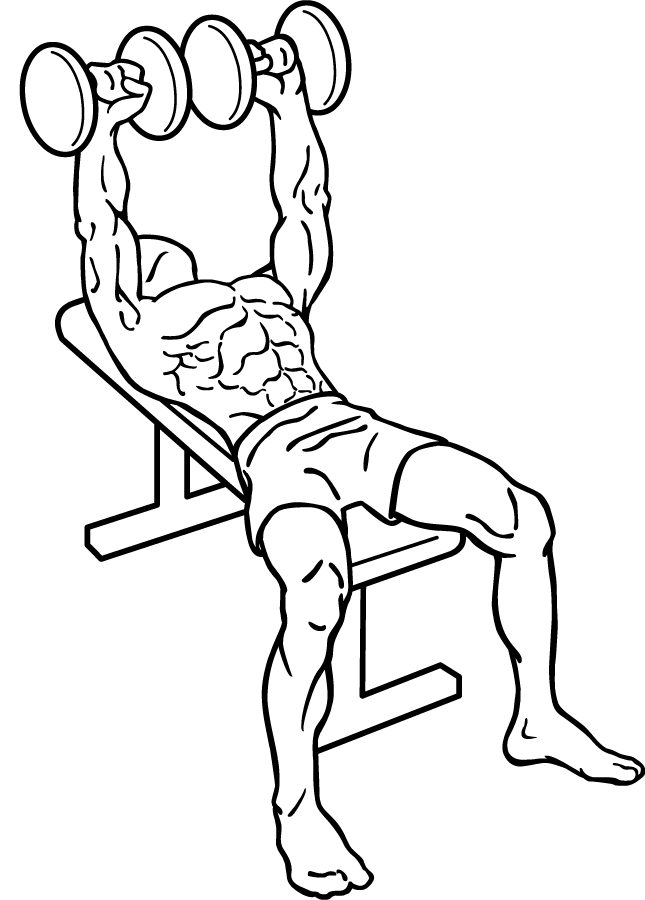

▶ Hareket
① Başlangıç
② Bitiş
🎬 Video

📷 Farklı açı 1
Everkinetic · CC BY-SA 3.0

📷 Farklı açı 2
Everkinetic · CC BY-SA 3.0
← sağa kaydır: başlangıç, bitiş ve farklı açılar · büyütmek için dokun
1
Dambılla göğüs presi
Dumbbell Bench Press
- Düz sehpaya sırtüstü uzan, ayakların yerde sabit, kürek kemiklerini geriye-aşağı sıkıştır.
- Dambılları göğüs hizasında, avuç içleri ayak yönüne bakacak şekilde tut.
- Nefes vererek dambılları yukarı it; tepede birbirine hafifçe yaklaştır ama çarpıştırma.
- 2–3 saniyede kontrollü indir, dirsekler gövdeyle ~45° açı yapsın.
⚠️ Belini aşırı kavislendirme, kalçan sehpadan kalkmasın. Dirsekleri tam yana (90°) açma, omzu zorlar.